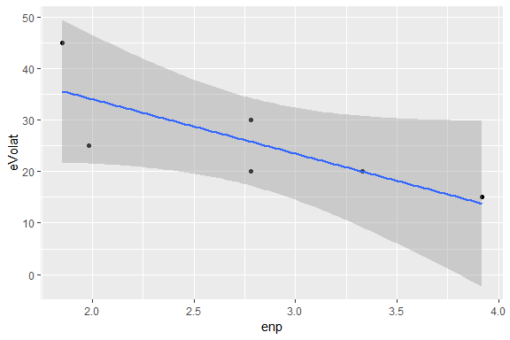

The esaps package 
Description
It allows structuring electoral data of different size and structure to calculate various indicators frequently used in the studies of electoral systems and party systems. Indicators of electoral volatility, electoral disproportionality, party nationalization and the effective number of parties are included.
Installation
You can install the released version (0.1.0) of esaps from CRAN with:
And the development version (0.2.0) from GitHub with:
Functions
| Indicator | Method | Variables | Function |
|---|---|---|---|
| Electoral Volatility | Pedersen (1979) |
election unit party votes
|
evolat(., method=1) |
| Powell and Tucker (2014) |
election unit party votes
|
evolat(., method=2) |
|
| Torcal and Lago (2015) |
election unit party votes M
|
evolat(., method=3) |
|
| Effective Number of Parties | Laakso and Taagepera (1979) |
election unit party votes or seats
|
enp() |
| Party System Nationalization | Mainwaring and Jones (2003) |
election unit party votes votes_nac
|
psn(., method=1) |
| Chhibber and Kollman (2004) |
election unit party votes votes_nac
|
psn(., method=2) |
|
| Party Nationalization | Mainwaring and Jones (2003) |
election unit party votes
|
psn(., method=1, pn=TRUE) |
| Electoral Disproportionality | Rae (1971) |
election unit party votes seats
|
dispro(., method=1) |
| Loosemore and Hanby (1971) |
election unit party votes seats
|
dispro(., method=2) |
|
| Lijphart_1 (1986) |
election unit party votes seats
|
dispro(., method=3) |
|
| Lijphart_2 (1994) |
election unit party votes seats
|
dispro(., method=4) |
|
| Gallagher (1991) |
election unit party votes seats
|
dispro(., method=5) |
|
| Cox and Shugart (1991) |
election unit party votes seats
|
dispro(., method=6) |

Examples
Load data
library(esaps)
votes <- list(data.frame(country = rep("ARG", 3),
year = c(1995, 2000, 2005),
party_A = c(40,10,20),
party_B = c(35,20,40),
party_C = c(25,70,40)),
data.frame(country = rep("URY", 4),
year = c(1995, 2000, 2005, 2010),
party_A = c(30,30,20,20),
party_B = c(30,50,40, 30),
party_C = c(30,10,30, 25),
party_D = c(10,10,10,25)),
data.frame(country = rep("BRA", 2),
year = c(1993, 1998),
party_A = c(30, 55),
party_B = c(70, 45)))
votes
#> [[1]]
#> country year party_A party_B party_C
#> 1 ARG 1995 40 35 25
#> 2 ARG 2000 10 20 70
#> 3 ARG 2005 20 40 40
#>
#> [[2]]
#> country year party_A party_B party_C party_D
#> 1 URY 1995 30 30 30 10
#> 2 URY 2000 30 50 10 10
#> 3 URY 2005 20 40 30 10
#> 4 URY 2010 20 30 25 25
#>
#> [[3]]
#> country year party_A party_B
#> 1 BRA 1993 30 70
#> 2 BRA 1998 55 45
votes <- convert_esaps(dataset = votes, unit.name = "country", election.name = "year")
votes
#> election unit party votes
#> 1 1995 ARG party_A 40
#> 2 2000 ARG party_A 10
#> 3 2005 ARG party_A 20
#> 4 1995 ARG party_B 35
#> 5 2000 ARG party_B 20
#> 6 2005 ARG party_B 40
#> 7 1995 ARG party_C 25
#> 8 2000 ARG party_C 70
#> 9 2005 ARG party_C 40
#> 10 1993 BRA party_A 30
#> 11 1998 BRA party_A 55
#> 12 1993 BRA party_B 70
#> 13 1998 BRA party_B 45
#> 14 1995 URY party_A 30
#> 15 2000 URY party_A 30
#> 16 2005 URY party_A 20
#> 17 2010 URY party_A 20
#> 18 1995 URY party_B 30
#> 19 2000 URY party_B 50
#> 20 2005 URY party_B 40
#> 21 2010 URY party_B 30
#> 22 1995 URY party_C 30
#> 23 2000 URY party_C 10
#> 24 2005 URY party_C 30
#> 25 2010 URY party_C 25
#> 26 1995 URY party_D 10
#> 27 2000 URY party_D 10
#> 28 2005 URY party_D 10
#> 29 2010 URY party_D 25
## VOTES AND SEATS
votes_2 <- data.frame(
year = c(2000, 2005),
country = "URY",
votes_party1 = c(20, 30),
votes_party2 = c(30, 35),
votes_party3 = c(40, 25),
votes_party4 = c(10, 10),
seats_party1 = c(25, 35),
seats_party2 = c(20, 30),
seats_party3 = c(40, 30),
seats_party4 = c(15, 5)
)
votes_2
#> year country votes_party1 votes_party2 votes_party3 votes_party4 seats_party1
#> 1 2000 URY 20 30 40 10 25
#> 2 2005 URY 30 35 25 10 35
#> seats_party2 seats_party3 seats_party4
#> 1 20 40 15
#> 2 30 30 5
votes_2c <- convert_esaps(dataset = votes_2, unit.name = "country", election.name = "year", seats = TRUE)
votes_2c
#> election unit party votes seats
#> 1 2000 URY votes_party1 20 25
#> 2 2000 URY votes_party2 30 20
#> 3 2000 URY votes_party3 40 40
#> 4 2000 URY votes_party4 10 15
#> 5 2005 URY votes_party1 30 35
#> 6 2005 URY votes_party2 35 30
#> 7 2005 URY votes_party3 25 30
#> 8 2005 URY votes_party4 10 5Functions
Electoral volatility
evolat(votes, 1)
#> election unit eVolat
#> 1 2000 ARG 45
#> 2 2005 ARG 30
#> 3 1998 BRA 25
#> 4 2000 URY 20
#> 5 2005 URY 20
#> 6 2010 URY 15
evolat(tidy_data = votes, method = 1, summary = TRUE)
#> [[1]]
#> election unit eVolat
#> 1 2000 ARG 45
#> 2 2005 ARG 30
#> 3 1998 BRA 25
#> 4 2000 URY 20
#> 5 2005 URY 20
#> 6 2010 URY 15
#>
#> [[2]]
#> unit first_elec last_elec election mean_volat sd_volat
#> 1 ARG 2000 2005 2 37.50 10.61
#> 2 BRA 1998 1998 1 25.00 NA
#> 3 URY 2000 2010 3 18.33 2.89Effective Number of Parties
enp(votes)
#> election unit enp
#> 1 1995 ARG 2.90
#> 2 2000 ARG 1.85
#> 3 2005 ARG 2.78
#> 4 1993 BRA 1.72
#> 5 1998 BRA 1.98
#> 6 1995 URY 3.57
#> 7 2000 URY 2.78
#> 8 2005 URY 3.33
#> 9 2010 URY 3.92Electoral Disproportionality
votes_2
#> year country votes_party1 votes_party2 votes_party3 votes_party4 seats_party1
#> 1 2000 URY 20 30 40 10 25
#> 2 2005 URY 30 35 25 10 35
#> seats_party2 seats_party3 seats_party4
#> 1 20 40 15
#> 2 30 30 5
v2 <- convert_esaps(dataset = votes_2, unit.name = "country", election.name = "year", seats = TRUE)
dispro(v2, 1:6, 1)
#> election unit Rae LH Lijphart_1 Lijphart_2 Gallagher Cox_Shugart
#> 1 2000 URY 0.05 0.1 0.10 0.06 0.32 1.00
#> 2 2005 URY 0.05 0.1 0.05 0.06 0.32 0.73
library(magrittr)
convert_esaps(dataset = votes_2, unit.name = "country", election.name = "year", seats = TRUE) %>%
dispro(1:3)
#> election unit Rae LH Lijphart_1
#> 1 2000 URY 0.05 0.1 0.10
#> 2 2005 URY 0.05 0.1 0.05
dispro(tidy_data = v2, method = c("Rae", "Gallagher"))
#> election unit Rae Gallagher
#> 1 2000 URY 0.05 0.32
#> 2 2005 URY 0.05 0.32Party System Nationalization Score and Party Nationalization Score
votes3 <- data.frame(election = rep(2000,4),
unit = rep(c("District_1", "District_2"), each = 2),
party = rep(c("party_A", "party_B"), 2),
votes = c(0.60,0.40, 0.30, 0.70),
votes_nac = rep(c(0.55,0.45),2)
)
votes3
#> election unit party votes votes_nac
#> 1 2000 District_1 party_A 0.6 0.55
#> 2 2000 District_1 party_B 0.4 0.45
#> 3 2000 District_2 party_A 0.3 0.55
#> 4 2000 District_2 party_B 0.7 0.45
psns(tidy_data = votes3, method = 1)
#> election psns
#> 1 2000 84.695
psns(tidy_data = votes3, method = 1, pns = TRUE)
#> $PSNS
#> election psns
#> 1 2000 84.695
#>
#> $PNS
#> party election pns
#> 1 party_A 2000 0.833
#> 2 party_B 2000 0.864Linear Model
library(tidyverse)
dat <- inner_join(evolat(votes, 1), enp(votes))
dat
#> election unit eVolat enp
#> 1 2000 ARG 45 1.85
#> 2 2005 ARG 30 2.78
#> 3 1998 BRA 25 1.98
#> 4 2000 URY 20 2.78
#> 5 2005 URY 20 3.33
#> 6 2010 URY 15 3.92
lm(formula(dat[,4:3]), data = dat)
#>
#> Call:
#> lm(formula = formula(dat[, 4:3]), data = dat)
#>
#> Coefficients:
#> (Intercept) eVolat
#> 4.25394 -0.05731
ggplot(dat, aes(x = enp, y = eVolat )) +
geom_point() +
geom_smooth(method = lm, se = TRUE)